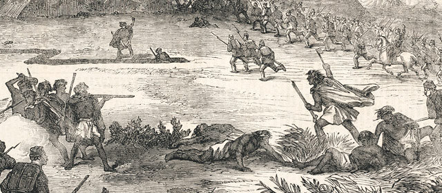

Māori Settlement
The first people to arrive in New Zealand were ancestors of the Māori, They are said to have arrived from Polynesia between 1200AD and 1300AD. They found NEw Zealand while exploring the Pacific and where said to be navigated by the the ocean currents, stars and the winds. The famous "haka" comes from a Māori legend. Māori tribes used the Haka to show the tribe's pride, strength and unity.
Euorpeans
Life in New Zealand is heavily influenced by European culture. THe first European to arrive in New Zealand was actually a Dutch explorer named Abel Tasman in 1642. Next to arrive in New Zealand was the British and then the French. It took a full 127 years for New Zealand to be discovered by another European and the was Captain James Cook, After this Europeans started to visit regularly. By the 1830's the British goverment was putting pressure on getting people to settle and colonise New Zealand before the French could. This caused violence and started the New Zealand Wars in the North Island.
Treaty Of Waitangi
The Treaty Of Waitangi was a treaty with the British Crown. On the 6th February 1840, William Hobson the first Governor of New Zealand invited Māori chiefs to sign a treaty with the British Crown. More than 500 chiefs signed the treaty. This treaty allowed the Māori people to live as they have and to keep the culture alive but gave the Crown the right to govern New Zealand.